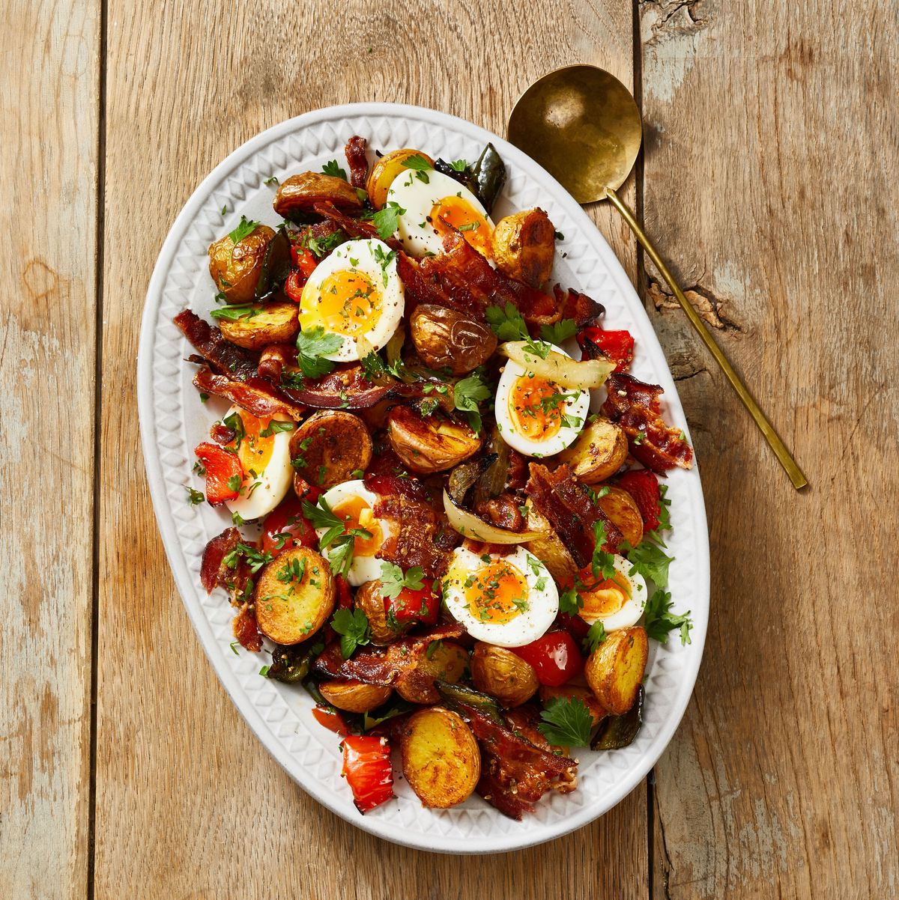

Roasted Hash and Jammy Eggs

Description
Ingredients
- 4 large eggs
- 8 slices of bacon (about 8 oz)
- 1/2 tsp. coriander seeds, crushed
- 1 1/2 lb. baby gold creamer potatoes
- 1 poblano pepper, quartered and sliced into 1/2-inch pieces
- 1 red pepper, quartered and sliced into 1/2-inch pieces
- 1 small onion, sliced into 1/3-inch wedges
- Kosher salt and pepper
- 1/4 c. flat-leaf parsley, chopped
- Flaky salt, for serving
Steps
- Heat oven to 425°F.
- Bring medium saucepan of water to a boil. Fill medium bowl with ice water. Reduce heat to a rapid simmer, gently add eggs and simmer 7 minutes. Immediately transfer eggs to ice bath to stop cooking. Drain and peel eggs.
- Meanwhile, arrange bacon in single layer on rimmed baking sheet. Bake, until beginning to crisp, 10 minutes. Flip, sprinkle with coriander, and cook until crisp and golden brown, 5 minutes. Remove to plate, reserving 1 tablespoon bacon fat with any remaining coriander on baking sheet. Let bacon cool 5 minutes, then chop into 2-inch pieces.
- Increase oven temperature to 450°F.
- Place potatoes in medium bowl and cover with plastic wrap. Microwave until potatoes are tender, 5 to 6 minutes. Let cool, then cut in half. Transfer to rimmed baking sheet with reserved bacon fat; add both peppers, onion, 1/2 teaspoon salt, and 1/4 teaspoon pepper. Bake until potatoes are golden brown and vegetables are tender and caramelized, 20 to 25 minutes.
- Slice jammy eggs in half and serve with hash, sprinkled with parsley and flaky salt.
Go Back